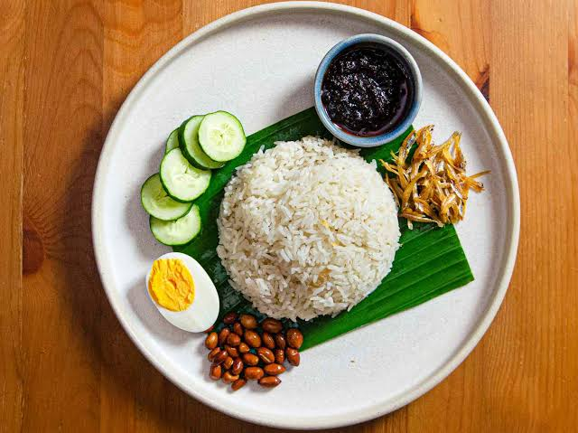
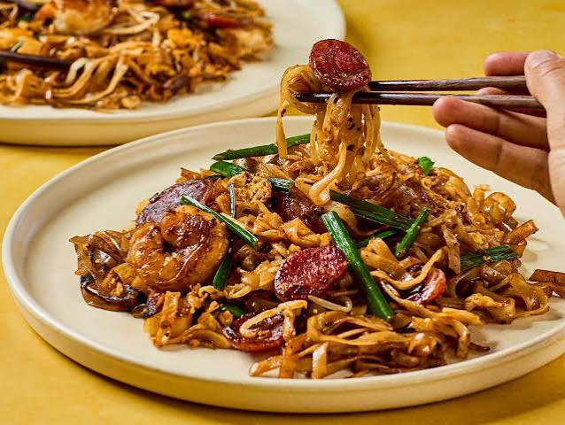
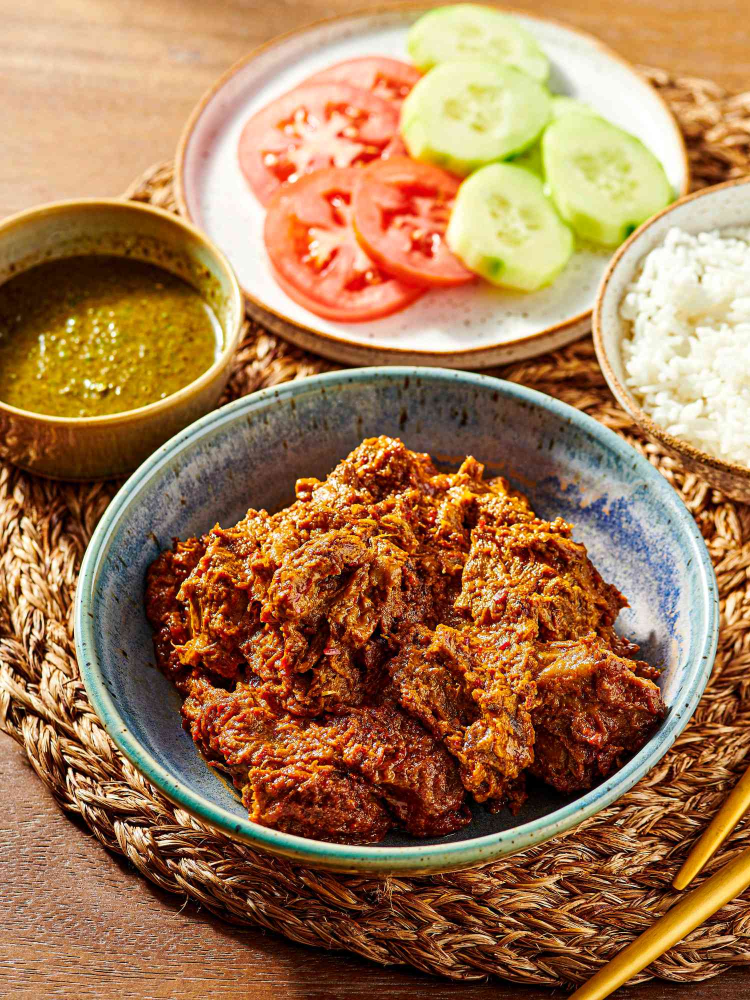

Nasi Lemak
Malaysia's National Dish - Fragrant Coconut rice with sambal and anchovies.
View More
Char Kway Teow
Smoky stir-fried flat noodles with prawns, egg, and bean sprouts — a Penang street food legend.
View More
Curry Laksa
Creamy coconut curry noodle soup packed with prawns, tofu puff, and bold spices — pure comfort in a bowl.
View More
Nasi Kerabu
Stunning blue rice served with fresh herbs, crispy fish, and coconut — a colorful pride of Kelantan.
View More
Beef Rendang
Slow-cooked beef in rich coconut and spice paste — a deep, complex flavor that gets better with every bite.
View More